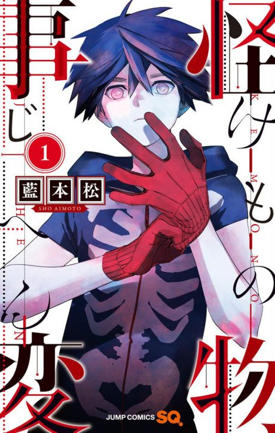

Anime
Anime
Manga2021 · Action, Drama, Mystery
Kemono Jihen
怪物事変
AniList7.2
Animeter—
Episodes12 ep
MangaCh. 22
Anime finished. Where does the manga pick up?
Start at Chapter22
The anime ends at chapter 21, so start at chapter 22. The anime censors the backstory in chapter 20 and skips chapters 10 and 16. The manga is ongoing.
121ongoing
Season 1Start reading here